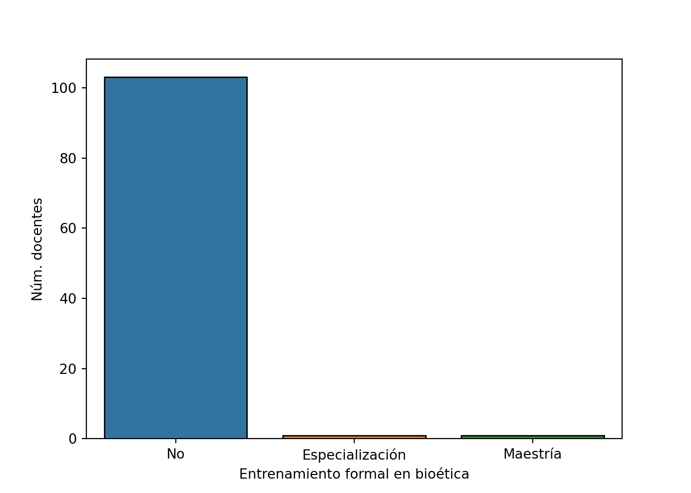
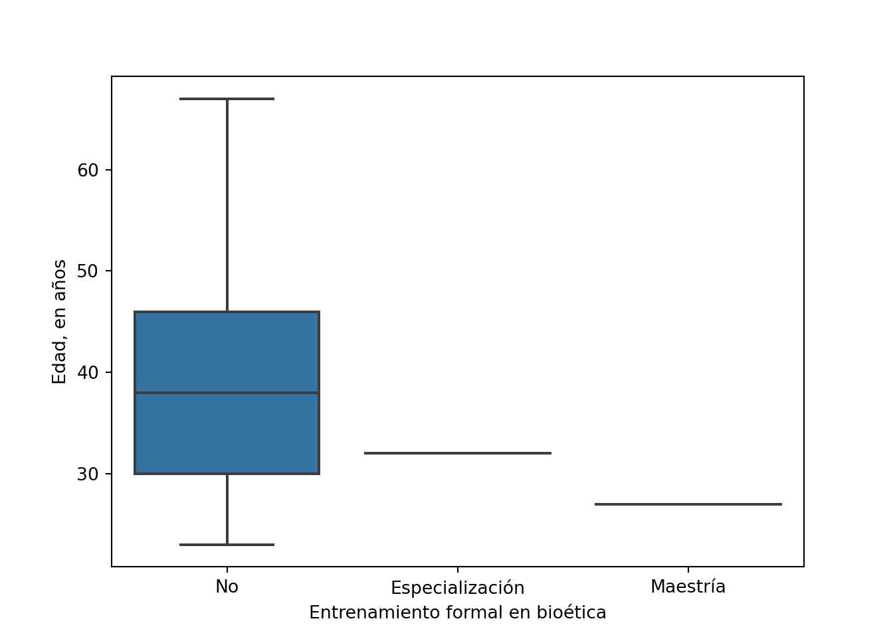
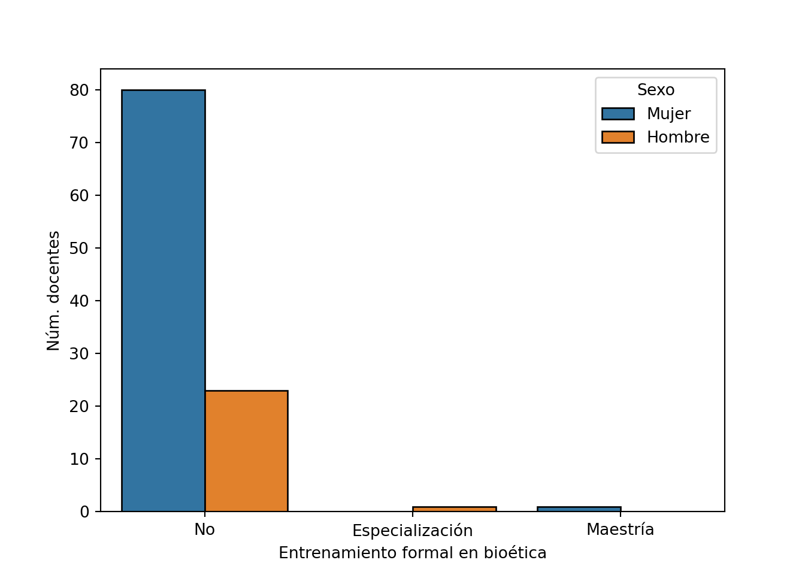
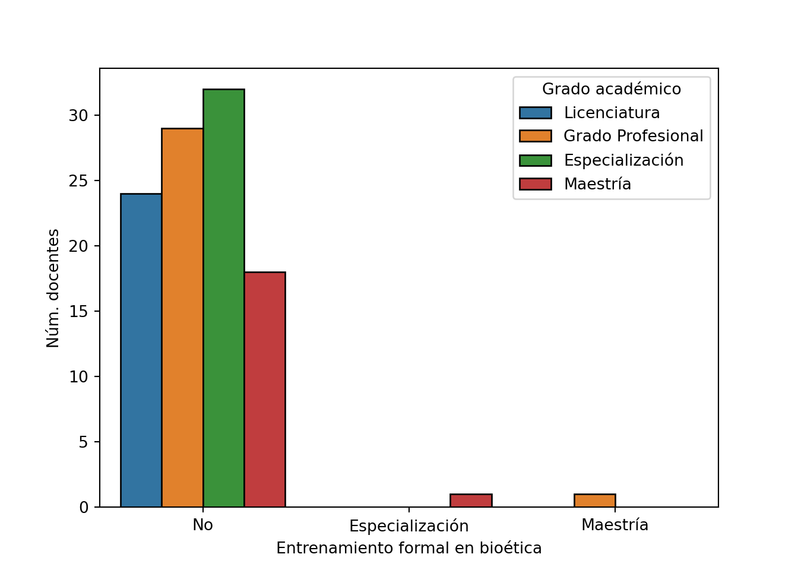
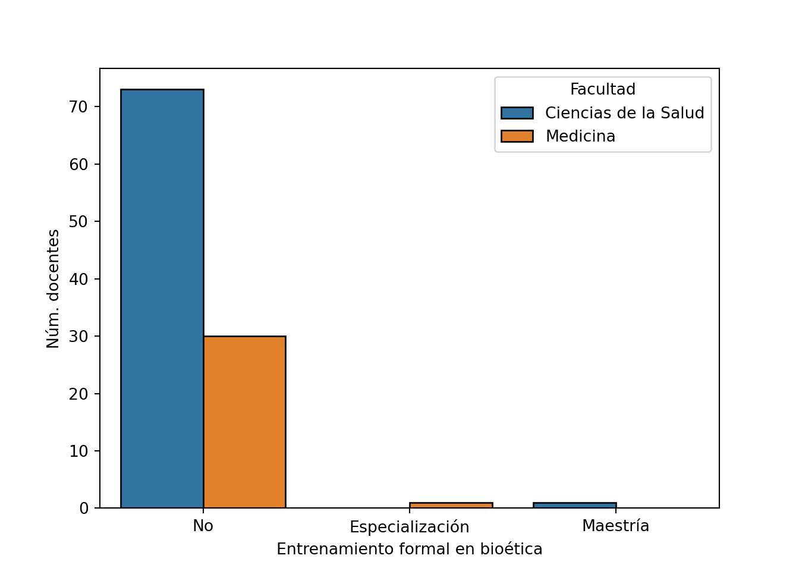
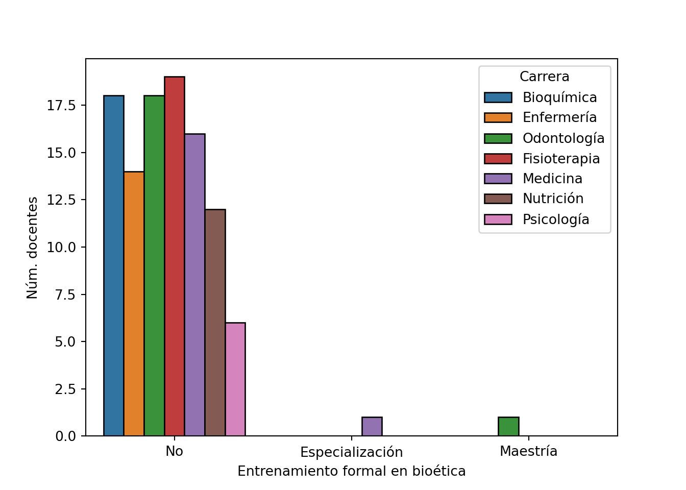
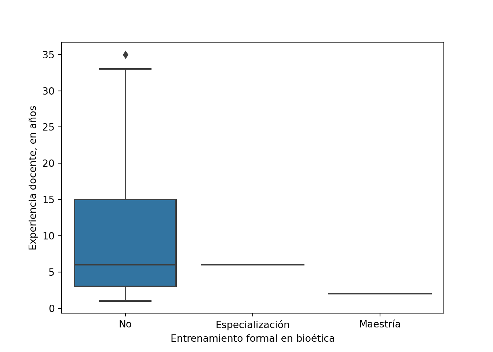

Entrenamiento formal
entrenamiento = 'formal'
etiqueta = 'Entrenamiento formal en bioética'
df[entrenamiento].value_counts(sort=False)## No 103
## Especialización 1
## Maestría 1
## Name: formal, dtype: int64## No 0.98
## Especialización 0.01
## Maestría 0.01
## Name: formal, dtype: float64sns.countplot(x=entrenamiento, data=df, edgecolor='black')
plt.xlabel(etiqueta)
plt.ylabel('Núm. docentes')
plt.show()
## vs edad
var = 'edad' # Definición de la variable de interés
df.groupby(entrenamiento)[var].describe().round().transpose() # Tendencia central y dispersión## formal No Especialización Maestría
## count 103.0 1.0 1.0
## mean 39.0 32.0 27.0
## std 11.0 NaN NaN
## min 23.0 32.0 27.0
## 25% 30.0 32.0 27.0
## 50% 38.0 32.0 27.0
## 75% 46.0 32.0 27.0
## max 67.0 32.0 27.0scipy.stats.kruskal(*[data[var].values for name, data in df.groupby(entrenamiento)]) # Prueba de Kruskal-Wallis## KruskalResult(statistic=1.908886438035436, pvalue=0.38502646029474485)sns.boxplot(x=entrenamiento, y=var, data =df) # Gráfico de cajas
plt.xlabel(etiqueta)
plt.ylabel('Edad, en años')
plt.show()
## vs sexo
var = 'sexo' # Definición de la variable de contraste
pd.crosstab(df[var], df[entrenamiento]) # Frecuencia absoluta## formal No Especialización Maestría
## sexo
## Hombre 23 1 0
## Mujer 80 0 1## formal No Especialización Maestría
## sexo
## Hombre 0.96 0.04 0.00
## Mujer 0.99 0.00 0.01## (3.687522473930241, 0.15822119811342458, 2, array([[23.54285714, 79.45714286],
## [ 0.22857143, 0.77142857],
## [ 0.22857143, 0.77142857]]))sns.countplot(x=entrenamiento, hue=var, data=df, edgecolor='black') # Gráfico de barras
plt.xlabel(etiqueta)
plt.ylabel('Núm. docentes')
plt.legend(title='Sexo', loc='upper right')
plt.show()
## vs grado académico
var = 'grado' # Definición de la variable de contraste
pd.crosstab(df[var], df[entrenamiento]) # Frecuencia absoluta## formal No Especialización Maestría
## grado
## Licenciatura 24 0 0
## Grado Profesional 29 0 1
## Especialización 32 0 0
## Maestría 18 1 0## formal No Especialización Maestría
## grado
## Licenciatura 1.00 0.00 0.00
## Grado Profesional 0.97 0.00 0.03
## Especialización 1.00 0.00 0.00
## Maestría 0.95 0.05 0.00## (7.075114971895759, 0.3139564744956458, 6, array([[23.54285714, 29.42857143, 31.39047619, 18.63809524],
## [ 0.22857143, 0.28571429, 0.3047619 , 0.18095238],
## [ 0.22857143, 0.28571429, 0.3047619 , 0.18095238]]))sns.countplot(x=entrenamiento, hue=var, data=df, edgecolor='black') # Gráfico de barras
plt.xlabel(etiqueta)
plt.ylabel('Núm. docentes')
plt.legend(title='Grado académico', loc='upper right')
plt.show()
## vs facultad
var = 'facultad' # Definición de la variable de contraste
pd.crosstab(df[var], df[entrenamiento]) # Frecuencia absoluta## formal No Especialización Maestría
## facultad
## Ciencias de la Salud 73 0 1
## Medicina 30 1 0## formal No Especialización Maestría
## facultad
## Ciencias de la Salud 0.99 0.00 0.01
## Medicina 0.97 0.03 0.00## (2.8138410881912286, 0.24489627042876436, 2, array([[72.59047619, 30.40952381],
## [ 0.7047619 , 0.2952381 ],
## [ 0.7047619 , 0.2952381 ]]))sns.countplot(x=entrenamiento, hue=var, data=df, edgecolor='black') # Gráfico de barras
plt.xlabel(etiqueta)
plt.ylabel('Núm. docentes')
plt.legend(title='Facultad', loc='upper right')
plt.show()
## vs carrera
var = 'carrera' # Definición de la variable de contraste
pd.crosstab(df[var], df[entrenamiento]) # Frecuencia absoluta## formal No Especialización Maestría
## carrera
## Bioquímica 18 0 0
## Enfermería 14 0 0
## Fisioterapia 19 0 0
## Medicina 16 1 0
## Nutrición 12 0 0
## Odontología 18 0 1
## Psicología 6 0 0## formal No Especialización Maestría
## carrera
## Bioquímica 1.00 0.00 0.00
## Enfermería 1.00 0.00 0.00
## Fisioterapia 1.00 0.00 0.00
## Medicina 0.94 0.06 0.00
## Nutrición 1.00 0.00 0.00
## Odontología 0.95 0.00 0.05
## Psicología 1.00 0.00 0.00## (9.777570711473144, 0.6354670626616614, 12, array([[17.65714286, 13.73333333, 18.63809524, 16.67619048, 11.77142857,
## 18.63809524, 5.88571429],
## [ 0.17142857, 0.13333333, 0.18095238, 0.16190476, 0.11428571,
## 0.18095238, 0.05714286],
## [ 0.17142857, 0.13333333, 0.18095238, 0.16190476, 0.11428571,
## 0.18095238, 0.05714286]]))sns.countplot(x=entrenamiento, hue=var, data=df, edgecolor='black') # Gráfico de barras
plt.xlabel(etiqueta)
plt.ylabel('Núm. docentes')
plt.legend(title='Carrera', loc='upper right')
plt.show()
## vs experiencia docente
var = 'experiencia'
df.groupby(entrenamiento)[var].describe().round().transpose() # Tendencia central y dispersión## formal No Especialización Maestría
## count 103.0 1.0 1.0
## mean 9.0 6.0 2.0
## std 7.0 NaN NaN
## min 1.0 6.0 2.0
## 25% 3.0 6.0 2.0
## 50% 6.0 6.0 2.0
## 75% 15.0 6.0 2.0
## max 35.0 6.0 2.0scipy.stats.kruskal(*[data[var].values for name, data in df.groupby(entrenamiento)]) # Prueba de Kruskal-Wallis## KruskalResult(statistic=1.8873846389533904, pvalue=0.38918817207787687)sns.boxplot(x=entrenamiento, y=var, data =df) # Gráfico de cajas
plt.xlabel(etiqueta)
plt.ylabel('Experiencia docente, en años')
plt.show()